| SOURCE | TITLE| IMAGE MATCH | click to source page |
| HipStamp | Browse Listings in British Commonwealth / HipStamp | 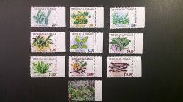 |
| HipStamp | Philippines 1985 Medicinal Plants "SPECIMEN" Stamp set #1740-45 MNH | Asia - Philippines, General Issue Stamp / HipStamp | 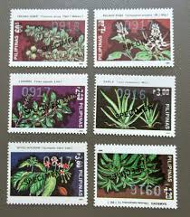 |
| Stamp Community Forum | Latin Species Names For Plants & Animals - Page 46 - Stamp Community Forum | 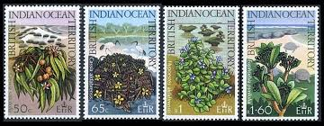 |
| HipStamp | Philippines Stamp 1740-1745 - Medicinal plants | Asia - Philippines, Stamp / HipStamp | 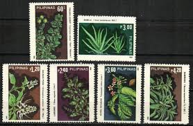 |
| eBay | Russia. Flowers. Pot Plants. Two Miniature sheets. 1994 | eBay | 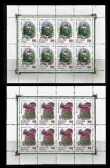 |
| bcstamps.co.uk | Tristan da Cunha 1972 QEII Pepper Tree 12½p wmk Inverted Mint SG166w - British Commonwealth Stamps | 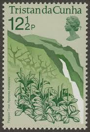 |
| brooklyngallery.com | Coin Holders | 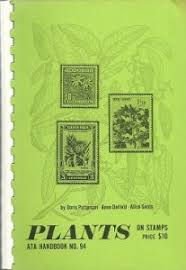 |
| Etsy | Retro Botanical Stamps: Encyclopedia Plant Stickers (22/45 Pieces) - Etsy Canada | 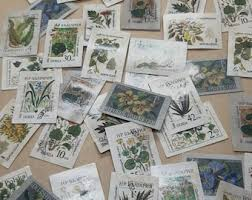 |
| Discover 39 journal prints and scrapbook stickers printable ideas | scrapbook printing, vintage paper printable, scrapbook stickers and more | 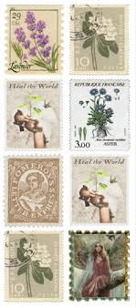 | |
| eBay | Plants Cambodian Stamps for sale | eBay | 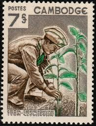 |
| HipStamp | 65280] Philippines 1985 Flora Medicinal Plants Heilpflanzen MNH | Asia - Philippines, General Issue Stamp / HipStamp | 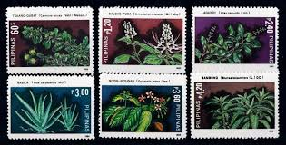 |
| Amazon.ca | Bulgaria block4 (Complete.Issue.) unmounted Mint/Never hinged ** MNH 1953 Mountain Flowers and Medicinal Plants (Stamps for Collectors) Plants/Mushrooms : Amazon.ca: Everything Else | 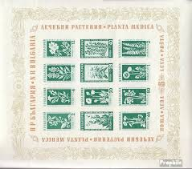 |
| eBay | France Stamps # 1536 MNH XF Imperforate Scott Value $30.00 | eBay | 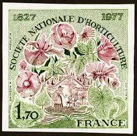 |
| Etsy | Retro Botanical Stamps: Encyclopedia Plant Stickers (22/45 Pieces) - Etsy | 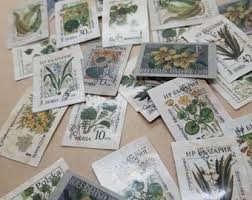 |
| eBay | Postage British Indian Ocean Territory Stamps for sale | eBay | 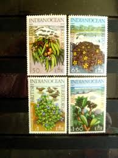 |
| postbeeld.com | Stamp 1975, British Indian Ocean Coastal flora 4v, 1975 - Collecting Stamps - PostBeeld - Online Stamp Shop - Collecting | 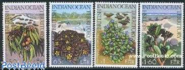 |
| Stamp Community Forum | Vegetables On Stamps, Minisheets, Postmarks......... - Page 9 - Stamp Community Forum | 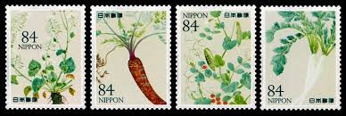 |
| Colnect | France : Stamps [Theme: C.E.P.T. - Europa] [1/15] : Colnect 📮 | 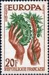 |
| eBay | FIJI 1975-77 6c ORCHID WMK 373 BLOCK of 12 MNH | eBay | 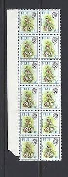 |
| eBay | Trees Bosnian and Herzegovinian Stamps for sale | eBay | 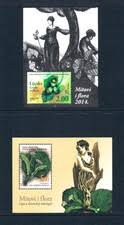 |
| Etsy | Retro Botanical Stamps: Encyclopedia Plant Stickers (22/45 Pieces) - Etsy Australia | 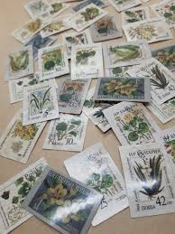 |
| eBay | Portuguese Cape Verde Portuguese & Colonies Stamps for sale | eBay | 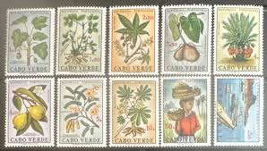 |
| eBay | France Stamps # 1586 MNH Imperforate | eBay | 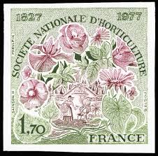 |
| stamps-plus.com | Stamps Plus | British Indian Ocean Territory | 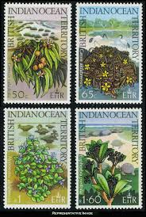 |
| eBay | Nature & Plants Cover Postal Stamps for sale | eBay | 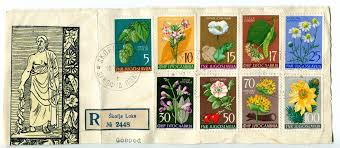 |
| eBay | Greenland Topical Postal Stamp Blocks for sale | eBay | 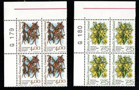 |
| eBay | Ranto Cachet US FDC #3126-3127 on 1376-1379 Botanical trees flowers 1997 | eBay | 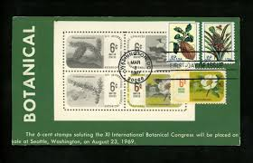 |
| Sovereign Order of Malta - Official website | Stamps & Coins - Sovereign Military Order of Malta | Page 35 | 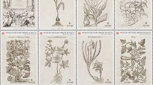 |
| Freestampcatalogue.com | Stamps from Cape Verde - Freestampcatalogue.com - The free online stampcatalogue with over 500.000 stamps listed. | 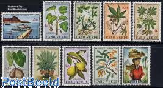 |
| eBay | Desert Plants set of 4 First Day Covers W/ 22K Gold Replica Stamps Addressed | eBay | 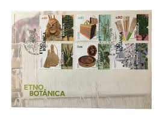 |
| eBay | LIECHTENSTEIN PLANTS FERNS 4 STAMPS SET COMPLETE OFFICIAL CACHET FDC 1992 UNADDR | eBay | 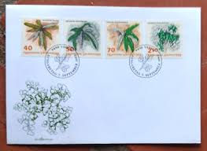 |
| HipStamp | Browse Listings in Africa > Malawi (Nyasaland) / HipStamp | 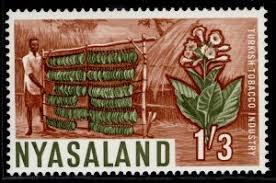 |
| Malaysian State Definitive Stamps Agro-based Products Product Code : MB8607A Place Order to : http://goo.gl/forms/OB7Y6YGGWL Issue date: 25 Oct 1986 Denomination 1c, 2c, 5c, 10c, 15c, 20c and 30c Stamp size 27mm | 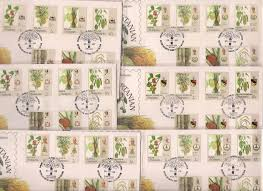 | |
| eBay | FRANCE 1536 - National Horticulture Society Centenary (pb97211) | eBay | 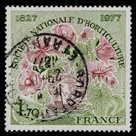 |
| eBay | Ireland, Postage Stamp, #655-657 Used, 1986 Ferns (AC) | eBay | 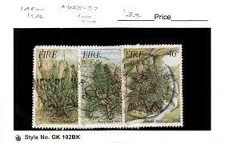 |
| eBay | Ranto Cachet US FDC #3126-27 on 1376-79 w/ 1378 Botanical orchids flowers 1997 | eBay | 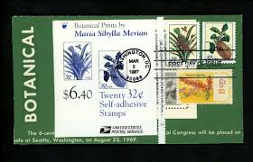 |
| Behance | Diana Baltag - Artist in Bucharest, Romania :: Behance | 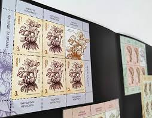 |
| eBay | Sweden, Postage Stamp, #1490-1491 Mint NH, 1984 Flower, Mountain | eBay | 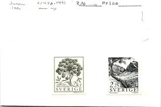 |
| Stamp Auction Network | Cherrystone Auctions Sale - 0618 Page 17 | 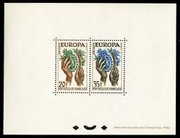 |
| eBay | Liechtenstein Maximum Card FDC`s, Special Stamps of Ferns 1992 | eBay | 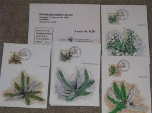 |
| eBay | Bosnia and Herzegovina Postal Stamps for sale | eBay | 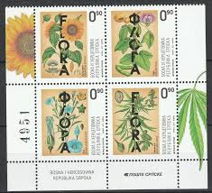 |
| sergent.com.au | New Zealand Stamp Errors 1960 Pictorials | 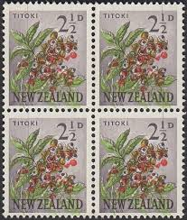 |
| HipStamp | Cape Verde Stamps Plants (1968) | Europe - Portugal & Colonies, Stamp / HipStamp | 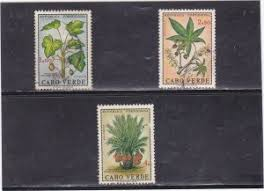 |
| eBay | Vintage Postage ROMANIA CIRCA 1957 Stamp printed Show Daphne Blagayana 10 Bani | eBay | 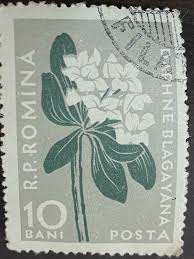 |
| eBay | Nature First Day of Issue US First Day Covers (1961-1970) for sale | eBay | 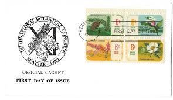 |
| eBay | Flowers Armenian Stamps for sale | eBay | 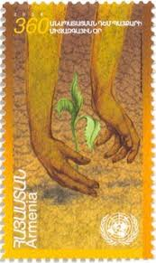 |
| eBay | C386 Liechtenstein 1992 flora ferns 4v. MNH | eBay | 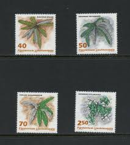 |
| Carousell | Mongolia For Sale | Stamps & Prints | Carousell Singapore | 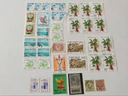 |
| Washi Tape, brown tape strip transparent background PNG clipart | 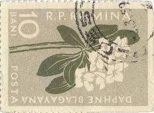 | |
| Etsy | Retro Botanical Stamps: Encyclopedia Plant Stickers (22/45 Pieces) - Etsy New Zealand | 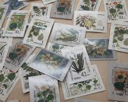 |
| eBay | 1996 Endangered Species FDC's (Blocks of 4) - All Three Offices - UNPA Fresh | eBay | |
| Stamp Community Forum | Fiji Stamps On Steiner Pages - Stamp Community Forum | |
| eBay | Liberia 1955, Flower set imperforate proofs entirely in black, NH #350-3,C91-2 | eBay | |
| eBay | FREE SHIP Malaysia Medicinal Plants II 2004 Fruit Flower Tree (sheetlet) MNH | eBay | |
| Sydney Philatelics, Australia | New Zealand Booklets Stamps - Sydney Philatelics Australia | |
| eBay | Flowers Fijian Stamps (1967-Now) for sale | eBay | |
| eBay | Flowers Cover Yugoslavian Stamps for sale | eBay | |
| eBay | Portugal Azores 329-332a booklet,MNH.Michel 349-352 MH 2. Local flora 1982. | eBay | |
| ProBoards | Czechoslovakia: Cinderellas | The Stamp Forum (TSF) | |
| eBay | 3126 3127 3128 3129 Merian Botanical Art Set of 4 Singles 1997 MNH - Buy Now | eBay |